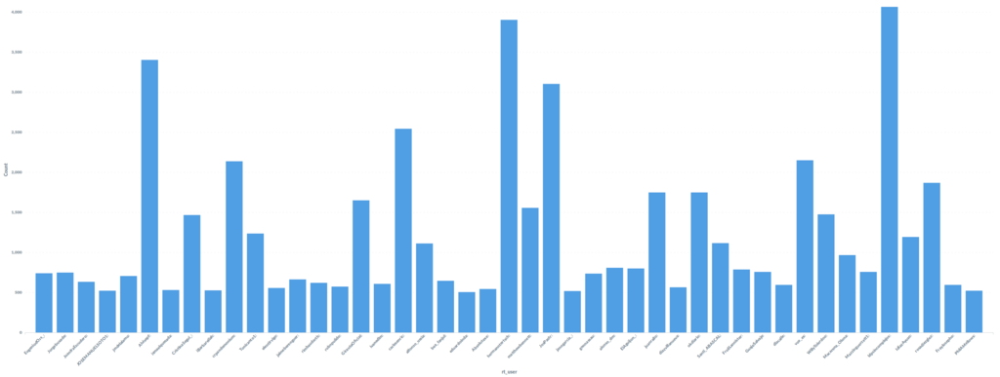

Online disinformation campaigns. How do these work. What can we do.
Every social media user has possibly noticed how content is often driven by very strong emotions. Many posts range from extreme cute kittens to drama stories, but above all emotions it seems like online content is especially fueled by anger [1] [2].
This might be specifically true for political driven content [3], but how people came from coming together to comment Eurovision [4] to insult each others during political campaigns?
To understand how we got here, we cannot ignore everything that happen with facebook and Cambridge Analytica [5]. Between 2013 and 2018 the company combined aggregation of Facebook data (later proved illegal), data mining and analysis, with communication campaigns during the electoral processes around the world with the goal to influence their outcome in favour of their clients [6].
What how does misinformation really look like?
If we take a look how any controversial or political topic on twitter we get a glimpse of how companies like Cambridge Analytica operate.
At its core misinformation campaigns are built to spread a certain political agenda using specific language and amplifying only certain sources.
In the last week I have been analyse topics spanning from the #covid-19 crisis to Spanish political propaganda. Here is what I found.
A few accounts and news sources spread the main messages, then a network of automated accounts make sure to retweet, highlight and reply to these messages.
A few examples
We have been observing a number of accounts following this similar pattern. Here is an example:
User: @alvisepf
We have chosen this user because it is one of the "top talkers" in the spanish Far right accounts.
For this user we extracted a subset of users that are retweeting their posts. For this subset of users we extracted a subset of their timelines.
This is the archive.
We were interesting in finding out what other accounts these users were tweeting. We found out most of the tweets are actually retweets to accounts in the spanish far right political spectrum. In other words these accounts are part of an amplification machine of the same group of top talkers for the spanish far right.
Hence we counted the number of retweets for account with the idea of extracting a distribution.
Again here is the result.
And here is a distribution per account:
 full image
{kind=link}
How does a typical anplification account look like
This archive contains approximately 400 tweets.
What news sources are linked
Here is a list of identified news sources:
- Ok Diario
- Periodista Digital
- La Gacet
- Caso Aislado
- El Municipio
- Mediterraneo Digital
- Outono
- Libertad Digital
- Libremercado
- Alerta Digital
- La Tribuna de Cartagena
- Es Diario
- Heraldo de la Mancha
- El Diestro
- https://youtube.com/channel/UCisIqN_XqjXz92eJMnjvEmA
We noticed that all these accounts always retweet the same news source. So here we compiled a list of tweets to these recurrent news sources from accounts that retweeted @alvisepf.
Finally here is a complete archive of a set of tweets linking articles from these news source: archive
What can be done
The patterns observed are pretty simple and repeated across countries and issues. Accounts like these are exposed every other day by researchers, but also by the social networks operators [7].
Why are operators not taking a stand against automated accounts? Patterns are not sophisticated, nor difficult to spot, different network and traffic metadata could be easily identified. More importantly these accounts exceed well the average frequency of tweets per hour of a normal user. A simple Proof of Work (PoW) [8] mechanism could well increase the cost of automating a large amount of highlights and retweets.
A PoW is a mathematical mechanism asking a client to perform a certain operation whose calculation difficulty is increased as the client makes more requests to a certain service. PoWs deters denial-of-service attacks and other service abuses, such as spam on a network.
REFERENCES:
[1] https://www.wired.com/story/this-big-beef-exposes-the-ugly-underbelly-of-vegan-vlogging/
[2] https://www.theguardian.com/science/2018/may/16/living-in-an-age-of-anger-50-year-rage-cycle
[3] https://time.com/4838673/anger-and-partisanship-as-a-virus/
[4] https://blog.twitter.com/en_gb/topics/marketing/2017/eurovision-2017.html
[6] https://en.wikipedia.org/wiki/Cambridge_Analytica
[7] https://cyber.fsi.stanford.edu/io/news/april-2020-twitter-takedown